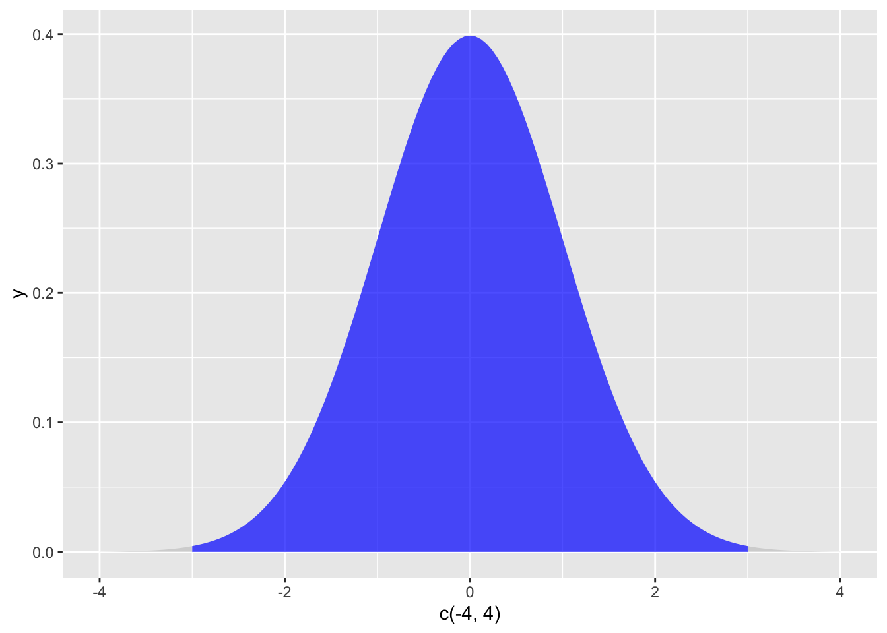

Chapter 7 Data Cleaning and Missing Values Analysis
Text by David Schuster
7.1 Videos
7.2 Introduction: Dealing with the Unexpected
So far, we have largely proceeded under the assumption that our data will be tidy and predictable. We have seen that R is very particular about data formatting and syntax. At least in my experience conducting laboratory experimental research, the actual data never come out this way. Despite the experimentalist’s emphasis on control in the design of research, working with human participants (and human researchers) means that there will be several opportunities for data to be messy. Participants will decline to answer some items; experimental apparatus will occasionally miss data or misreport it; and, anyone doing lengthy data entry will eventually make a typo.
In this chapter, we will see how we can address problems with our data with the goal of maximizing statistical conclusion validity. As researchers, we solve the problems with messy data through the steps of data coding and data cleaning. Data coding is the process of translating observations from the format in which they were collected into a format that is suitable for data analysis. For example, if you had a spreadsheet of observations with one score per column (i.e., data in many columns and one row), you would at least need to transpose that spreadsheet so that the observations were collected into one column (i.e., data in one column and many rows) for it to be imported into R as a data frame. If your research involves handwritten data, audio transcription, or interview data, data coding will be needed to turn qualitative observations into quantitative scores.
7.3 Data Cleaning
Data cleaning is a process of detecting and addressing errors in the data, including missing and erroneous scores. Errors in the data can affect statistical conclusion validity in two ways:
Errors in the data can affect the data randomly by contributing to error variance. Imagine a ruler printed on a stretchy piece of elastic. Despite your best efforts, you would probably get a slightly different measurement every time. This inconsistency is called unreliability. Unreliable measures are one possible source of random error. Another source of random error could occur if a researcher lost data accidentally and at random, which can happen with paper surveys. If a survey was lost, and the lost survey was effectively lost at random, then the missing data would contribute to random error. The effects of random error in our data are unpredictable. In most cases, higher error variance makes it harder to reject the null and thus increases the Type II error rate. Since we care about statistical power, we want to minimize the Type II error rate. However, when the true effect is near zero, unreliability can actually increase the observed effect size, which would increase the Type I error rate (Rogosa, 1980 as cited in T. D. Cook, Campbell, and Shadish (2002), 2012). Because the alpha level is our threshold of evidence, we want to minimize the Type I error rate. All this to say, we want to minimize random error in our data.
Errors in the data can affect the data systematically, resulting in bias. Inferential statistics helps us to make statistical conclusions despite the presence of sampling error, which is evident in variation across samples and is the difference between an estimate and population parameter. While inferential statistics can help us account for sampling error, our statistics still rely on random sampling. Random sampling is important for two reasons. First, random sampling is important is because it allows us to use our sample statistic for estimation, justified under the central limit theorem. Second, random sampling is important is because it is unbiased. That is, in a random sample, the direction of sampling error (either over- or under-estimating) is unpredictable and averages to zero. Unfortunately for the researcher, it is not just the selection of participants that needs to be unbiased, it is also the representation of those participants in the data, as well. Violating this assumption can lead to selection bias, which is a research design problem that cannot always be solved by statistics. Imagine you were trying to estimate the prevalence of dementia in adults in a community. To avoid selection bias, participants would need to be sampled in an unbiased way. Conducting this research with only participants living in an assisted living facility would create a bias toward a greater prevalence of dementia. Conducting this research with only participants living in single-family homes would create a bias toward a lower prevalence of dementia.
So far, this is a research design issue, specifically in the selection of a sampling method. Because this issue also applies to the representation of participants in the data, an unbiased sample can also end up biased through attrition (leaving the study). I would imagine a psychological study about dementia and its impacts would be sensitive. If researchers began their interview with an insensitive question about dementia, participants with a history of dementia (or a family history of dementia) might be put off and decline to participate. If having a history of dementia or a family history of dementia was correlated with having dementia, then the researchers have unknowingly biased their sample by including fewer participants at risk of dementia. This problem can easily extend past the data collection when participants provide incomplete data or researchers remove participants from a data file in a biased way. Biased data can reduce the size of true effects, create effects that do not exist, or even reverse the direction of a true effect. Because of this, bias has the potential to inflate both Type I and Type II error.
Although we cannot solve major problems with the research design using statistics, we can and should examine our data to try and detect problems. In some cases, problems can be solvable. In other cases, our solution will be to qualify the conclusions we make with our data. Data cleaning thus involves understanding issues in the data and correcting them while preserving meaning and statistical conclusion validity.
7.4 A General Plan for Data Cleaning
Refer to this checklist as a general plan for dealing with new data to be used for research. We’ll go into more detail about how to do these steps in the sections that follow.
Design the study to prevent problems
Examine your data
Outlier identification and analysis
Missing values analysis
Test-specific assumption checking
Describe your data cleaning in APA style
Next, lets look at each step in more detail.
7.5 Step 0. Design your Research to Mimimize Data Problems
I am including this as a reminder, as it is a research design topic and the strategies will differ depending on your research question. As you will see in the sections that follow, we do not have robust ways to correct missing and erroneous data after the fact, so wherever it is possible to increase the reliability and accuracy of data collection and avoid bias, it is worthwhile to do so. If a researcher is manually recording data (i.e., taking notes on a clipboard), having a backup researcher recording data would increase the accuracy of the data. In an online study, adding input response validation can help prevent errors, as well. If you ask participants for their age in years, then you may wish to have your survey software prevent any characters except for numbers from being entered in the box for “age.”
Response validation does require some care, as it borders on the ethical principle of respect for persons, which includes informed consent and the avoidance of coercion. The APA Ethics Code requires us to tell participants what is involved in the study, get their permission to participate, and not use status, power, authority, or pressure to get individuals to participate (Assocation (2020)). This principle applies equally to the study and to individual responses during the study. Just as you cannot tell a participant to stay and complete a study, you also cannot tell a participant that they must answer an item on a survey. Although it may be tempting to mark all your electronic survey items as “required” (which would prevent participants from continuing unless they provide a response), you want to avoid any implication that participants are not free to choose to participate.
In all, designing backups and cross-checks in your data collection protocol can reduce the amount of missing and erroneous data. Because we follow the ethical principle of respect for persons, we cannot compell our participants to provide data to us, and we will usually have to deal with some missing data regardless.
7.6 Step 1. Examine Your Data
Descriptive statistics can help you make sense of a new dataset. After importing data into R, check your dataframe to see what variables are included using summary(). Check the minimum and maximum values. Are they reasonable? You can use the function head() to see the first few rows of each variable. As yourself these questions:
What are the variables?
What are the levels of measurement of the variables? Are they continuous or discrete?
Are the data complete? Which variables have missing values?
Does further coding need to be done?
Run appropriate descriptive statistics
Generate appropriate visualizations (histograms or bar charts)
What are the shapes of the distributions?
Are the distributions normal? What patterns are evident? Generate Q-Q plots
Are the values reasonable?
What is the structure of the data? If there are repeated measurements, are the represented as additional columns (called wide format) or additional rows (called long format)
percentages1 <- c(32, 3, 2, 32, 32, 45, 101) # participant percentage scores at time1
percentages2 <- c(12, 12, 12, 11, 18, 92, 14) # participant percentage scores at time2
df <- cbind(percentages1, percentages2) # create a dataframe
summary(df) # list min and max values## percentages1 percentages2
## Min. : 2.00 Min. :11.00
## 1st Qu.: 17.50 1st Qu.:12.00
## Median : 32.00 Median :12.00
## Mean : 35.29 Mean :24.43
## 3rd Qu.: 38.50 3rd Qu.:16.00
## Max. :101.00 Max. :92.00head(df) # list first few values## percentages1 percentages2
## [1,] 32 12
## [2,] 3 12
## [3,] 2 12
## [4,] 32 11
## [5,] 32 18
## [6,] 45 92In the example above, I have recorded scores for participants at two points in time. The scores are percentages, so acceptable values are between 0 and 100. Percentages are continuous, ratio measures. When I run summary(), I see that percentages1 has a maximum score of 101, so that value is probably an error. I would want to go back to the original source of the data and see if I can find the intended value. I would finish this first pass by running descriptive statistics (note that some are provided by the summary() function) and generating histograms.
Finally, you should be aware that there are two ways to include repeated measurements from participants. Any study with a within-subjects design will result in repeated observations of the same participants. There are two ways to collect repeated measures for a participant. One option is to add additional columns for each measurement (as I did in my example, a time1 variable and a time2 variable), which is called wide format. The other option is to add additional rows for each measurement, which is called long format. As a side note, SPSS only works with data in wide format. Some procedures in R require wide format while others require long format.
Next, we will add some useful R functions for managing data and converting between wide and long formats.
Note that you may not need to use the following R functions immediately. I am including them because they can be useful during data cleaning.
7.6.1 Sorting, flipping and merging data
In this section I discuss a few useful operations that I feel are loosely related to one another: sorting a vector, sorting a data frame, binding two or more vectors together into a data frame (or matrix), and flipping a data frame (or matrix) on its side. They’re all fairly straightforward tasks, at least in comparison to some of the more obnoxious data handling problems that turn up in real life.
7.6.1.1 Creating tables from vectors
Let’s start with a simple example. As the father of a small child, I naturally spend a lot of time watching TV shows like In the Night Garden. In the nightgarden.Rdata file, I’ve transcribed a short section of the dialogue. The file contains two variables, speaker and utterance, and when we take a look at the data, it becomes very clear what happened to my sanity.
library(lsr)
load(file.path(projecthome,"data","nightgarden.Rdata"))
who()## -- Name -- -- Class -- -- Size --
## a numeric 1
## addArrow function
## addDistPlot function
## afl data.frame 4296 x 12
## afl.finalists factor 400
## afl.margins numeric 176
## afl2 data.frame 4296 x 2
## b numeric 1
## clin.trial data.frame 18 x 3
## colour logical 1
## crit.hi numeric 1
## crit.lo numeric 1
## def.par list 66
## df matrix 7 x 2
## emphCol character 1
## emphColLight character 1
## emphGrey character 1
## eps logical 1
## estImg list 0
## Fibonacci numeric 7
## freq integer 17
## h numeric 1
## height numeric 1
## i integer 1
## IQ numeric 10000
## m numeric 1
## N integer 100
## nhstImg list 0
## onesample numeric 5
## percentages1 numeric 7
## percentages2 numeric 7
## plotOne function
## plotSamples function
## pop_sd numeric 1
## population numeric 1000
## pow numeric 100
## projecthome character 1
## s numeric 1
## sampling numeric 2000
## sampling_sd numeric 1
## setUpPlot function
## speaker character 10
## standard_error numeric 1
## suspicious.cases logical 176
## teams character 17
## theta numeric 1
## utterance character 10
## width numeric 1
## x integer 101
## X numeric 1000
## y numeric 101
## z logical 101print( speaker )## [1] "upsy-daisy" "upsy-daisy" "upsy-daisy" "upsy-daisy" "tombliboo"
## [6] "tombliboo" "makka-pakka" "makka-pakka" "makka-pakka" "makka-pakka"print( utterance )## [1] "pip" "pip" "onk" "onk" "ee" "oo" "pip" "pip" "onk" "onk"With these as my data, one task I might find myself needing to do is construct a frequency count of the number of words each character speaks during the show. The table() function provides a simple way do to this. The basic usage of the table() function is as follows:
table(speaker)## speaker
## makka-pakka tombliboo upsy-daisy
## 4 2 4The output here tells us on the first line that what we’re looking at is a tabulation of the speaker variable. On the second line it lists all the different speakers that exist in the data, and on the third line it tells you how many times that speaker appears in the data. In other words, it’s a frequency table104 Notice that in the command above I didn’t name the argument, since table() is another function that makes use of unnamed arguments. You just type in a list of the variables that you want R to tabulate, and it tabulates them. For instance, if I type in the name of two variables, what I get as the output is a cross-tabulation:
table(speaker, utterance)## utterance
## speaker ee onk oo pip
## makka-pakka 0 2 0 2
## tombliboo 1 0 1 0
## upsy-daisy 0 2 0 2When interpreting this table, remember that these are counts: so the fact that the first row and second column corresponds to a value of 2 indicates that Makka-Pakka (row 1) says “onk” (column 2) twice in this data set. As you’d expect, you can produce three way or higher order cross tabulations just by adding more objects to the list of inputs. However, I won’t discuss that in this section.
7.6.1.2 Creating tables from data frames
Most of the time your data are stored in a data frame, not kept as separate variables in the workspace. Let’s create one:
itng <- data.frame( speaker, utterance )
itng## speaker utterance
## 1 upsy-daisy pip
## 2 upsy-daisy pip
## 3 upsy-daisy onk
## 4 upsy-daisy onk
## 5 tombliboo ee
## 6 tombliboo oo
## 7 makka-pakka pip
## 8 makka-pakka pip
## 9 makka-pakka onk
## 10 makka-pakka onkThere’s a couple of options under these circumstances. Firstly, if you just want to cross-tabulate all of the variables in the data frame, then it’s really easy:
table(itng)## utterance
## speaker ee onk oo pip
## makka-pakka 0 2 0 2
## tombliboo 1 0 1 0
## upsy-daisy 0 2 0 2However, it’s often the case that you want to select particular variables from the data frame to tabulate. This is where the xtabs() function is useful. In this function, you input a one sided formula in order to list all the variables you want to cross-tabulate, and the name of the data frame that stores the data:
xtabs( formula = ~ speaker + utterance, data = itng )## utterance
## speaker ee onk oo pip
## makka-pakka 0 2 0 2
## tombliboo 1 0 1 0
## upsy-daisy 0 2 0 2Clearly, this is a totally unnecessary command in the context of the itng data frame, but in most situations when you’re analysing real data this is actually extremely useful, since your data set will almost certainly contain lots of variables and you’ll only want to tabulate a few of them at a time.
7.6.1.3 Converting a table of counts to a table of proportions
The tabulation commands discussed so far all construct a table of raw frequencies: that is, a count of the total number of cases that satisfy certain conditions. However, often you want your data to be organised in terms of proportions rather than counts. This is where the prop.table() function comes in handy. It has two arguments:
x. The frequency table that you want to convert.margin. Which “dimension” do you want to calculate proportions for. By default, R assumes you want the proportion to be expressed as a fraction of all possible events. See examples for details.
To see how this works:
itng.table <- table(itng) # create the table, and assign it to a variable
itng.table # display the table again, as a reminder## utterance
## speaker ee onk oo pip
## makka-pakka 0 2 0 2
## tombliboo 1 0 1 0
## upsy-daisy 0 2 0 2prop.table( x = itng.table ) # express as proportion:## utterance
## speaker ee onk oo pip
## makka-pakka 0.0 0.2 0.0 0.2
## tombliboo 0.1 0.0 0.1 0.0
## upsy-daisy 0.0 0.2 0.0 0.2Notice that there were 10 observations in our original data set, so all that R has done here is divide all our raw frequencies by 10. That’s a sensible default, but more often you actually want to calculate the proportions separately by row (margin = 1) or by column (margin = 2). Again, this is most clearly seen by looking at examples:
prop.table( x = itng.table, margin = 1)## utterance
## speaker ee onk oo pip
## makka-pakka 0.0 0.5 0.0 0.5
## tombliboo 0.5 0.0 0.5 0.0
## upsy-daisy 0.0 0.5 0.0 0.5Notice that each row now sums to 1, but that’s not true for each column. What we’re looking at here is the proportions of utterances made by each character. In other words, 50% of Makka-Pakka’s utterances are “pip,” and the other 50% are “onk.” Let’s contrast this with the following command:
prop.table( x = itng.table, margin = 2)## utterance
## speaker ee onk oo pip
## makka-pakka 0.0 0.5 0.0 0.5
## tombliboo 1.0 0.0 1.0 0.0
## upsy-daisy 0.0 0.5 0.0 0.5Now the columns all sum to 1 but the rows don’t. In this version, what we’re seeing is the proportion of characters associated with each utterance. For instance, whenever the utterance “ee” is made (in this data set), 100% of the time it’s a Tombliboo saying it.
7.6.1.4 Sorting a numeric or character vector
One thing that you often want to do is sort a variable. If it’s a numeric variable you might want to sort in increasing or decreasing order. If it’s a character vector you might want to sort alphabetically, etc. The sort() function provides this capability.
numbers <- c(2,4,3)
sort( x = numbers )## [1] 2 3 4You can ask for R to sort in decreasing order rather than increasing:
sort( x = numbers, decreasing = TRUE )## [1] 4 3 2And you can ask it to sort text data in alphabetical order:
text <- c("aardvark", "zebra", "swing")
sort( text )## [1] "aardvark" "swing" "zebra"That’s pretty straightforward. That being said, it’s important to note that I’m glossing over something here. When you apply sort() to a character vector it doesn’t strictly sort into alphabetical order. R actually has a slightly different notion of how characters are ordered (see Section ?? and Table ??), which is more closely related to how computers store text data than to how letters are ordered in the alphabet. However, that’s a topic we’ll discuss later. For now, the only thing I should note is that the sort() function doesn’t alter the original variable. Rather, it creates a new, sorted variable as the output. So if I inspect my original text variable:
text## [1] "aardvark" "zebra" "swing"I can see that it has remained unchanged.
7.6.1.5 Sorting a factor
You can also sort factors, but the story here is slightly more subtle because there’s two different ways you can sort a factor: alphabetically (by label) or by factor level. The sort() function uses the latter. To illustrate, let’s look at the two different examples. First, let’s create a factor in the usual way:
fac <- factor( text )
fac## [1] aardvark zebra swing
## Levels: aardvark swing zebraNow let’s sort it:
sort(fac)## [1] aardvark swing zebra
## Levels: aardvark swing zebraThis looks like it’s sorted things into alphabetical order, but that’s only because the factor levels themselves happen to be alphabetically ordered. Suppose I deliberately define the factor levels in a non-alphabetical order:
fac <- factor( text, levels = c("zebra","swing","aardvark") )
fac## [1] aardvark zebra swing
## Levels: zebra swing aardvarkNow what happens when we try to sort fac this time? The answer:
sort(fac)## [1] zebra swing aardvark
## Levels: zebra swing aardvarkIt sorts the data into the numerical order implied by the factor levels, not the alphabetical order implied by the labels attached to those levels. Normally you never notice the distinction, because by default the factor levels are assigned in alphabetical order, but it’s important to know the difference:
7.6.1.6 Sorting a data frame
The sort() function doesn’t work properly with data frames. If you want to sort a data frame the standard advice that you’ll find online is to use the order() function (not described in this book) to determine what order the rows should be sorted, and then use square brackets to do the shuffling. There’s nothing inherently wrong with this advice, I just find it tedious. To that end, the lsr package includes a function called sortFrame() that you can use to do the sorting. The first argument to the function is named (x), and should correspond to the data frame that you want sorted. After that, all you do is type a list of the names of the variables that you want to use to do the sorting. For instance, if I type this:
load(file.path(projecthome,"data","nightgarden2.Rdata"))
garden## speaker utterance line
## case.1 upsy-daisy pip 1
## case.2 upsy-daisy pip 2
## case.3 tombliboo ee 5
## case.4 makka-pakka pip 7
## case.5 makka-pakka onk 9sortFrame( garden, speaker, line)## speaker utterance line
## case.4 makka-pakka pip 7
## case.5 makka-pakka onk 9
## case.3 tombliboo ee 5
## case.1 upsy-daisy pip 1
## case.2 upsy-daisy pip 2what R does is first sort by speaker (factor level order). Any ties (i.e., data from the same speaker) are then sorted in order of line (increasing numerical order). You can use the minus sign to indicate that numerical variables should be sorted in reverse order:
sortFrame( garden, speaker, -line)## speaker utterance line
## case.5 makka-pakka onk 9
## case.4 makka-pakka pip 7
## case.3 tombliboo ee 5
## case.2 upsy-daisy pip 2
## case.1 upsy-daisy pip 1As of the current writing, the sortFrame() function is under development. I’ve started introducing functionality to allow you to use the - sign to non-numeric variables or to make a distinction between sorting factors alphabetically or by factor level. The idea is that you should be able to type in something like this:
sortFrame( garden, -speaker)and have the output correspond to a sort of the garden data frame in reverse alphabetical order (or reverse factor level order) of speaker. As things stand right now, this will actually work, and it will produce sensible output:
sortFrame( garden, -speaker)## speaker utterance line
## case.1 upsy-daisy pip 1
## case.2 upsy-daisy pip 2
## case.3 tombliboo ee 5
## case.4 makka-pakka pip 7
## case.5 makka-pakka onk 9However, I’m not completely convinced that I’ve set this up in the ideal fashion, so this may change a little bit in the future.
7.6.2 Binding vectors together
A not-uncommon task that you might find yourself needing to undertake is to combine several vectors. For instance, let’s suppose we have the following two numeric vectors:
cake.1 <- c(100, 80, 0, 0, 0)
cake.2 <- c(100, 100, 90, 30, 10)The numbers here might represent the amount of each of the two cakes that are left at five different time points. Apparently the first cake is tastier, since that one gets devoured faster. We’ve already seen one method for combining these vectors: we could use the data.frame() function to convert them into a data frame with two variables, like so:
cake.df <- data.frame( cake.1, cake.2 )
cake.df## cake.1 cake.2
## 1 100 100
## 2 80 100
## 3 0 90
## 4 0 30
## 5 0 10Two other methods that I want to briefly refer to are the rbind() and cbind() functions, which will convert the vectors into a matrix. I’ll discuss matrices properly in Section ?? but the details don’t matter too much for our current purposes. The cbind() function (“column bind”) produces a very similar looking output to the data frame example:
cake.mat1 <- cbind( cake.1, cake.2 )
cake.mat1## cake.1 cake.2
## [1,] 100 100
## [2,] 80 100
## [3,] 0 90
## [4,] 0 30
## [5,] 0 10but nevertheless it’s important to keep in mind that cake.mat1 is a matrix rather than a data frame, and so has a few differences from the cake.df variable. The rbind() function (“row bind”) produces a somewhat different output: it binds the vectors together row-wise rather than column-wise, so the output now looks like this:
cake.mat2 <- rbind( cake.1, cake.2 )
cake.mat2## [,1] [,2] [,3] [,4] [,5]
## cake.1 100 80 0 0 0
## cake.2 100 100 90 30 10You can add names to a matrix by using the rownames() and colnames() functions, and I should also point out that there’s a fancier function in R called merge() that supports more complicated “database like” merging of vectors and data frames, but I won’t go into details here.
7.6.2.1 Binding multiple copies of the same vector together
It is sometimes very useful to bind together multiple copies of the same vector. You could do this using the rbind and cbind functions, using comands like this one
fibonacci <- c( 1,1,2,3,5,8 )
rbind( fibonacci, fibonacci, fibonacci )## [,1] [,2] [,3] [,4] [,5] [,6]
## fibonacci 1 1 2 3 5 8
## fibonacci 1 1 2 3 5 8
## fibonacci 1 1 2 3 5 8but that can be pretty annoying, especially if you needs lots of copies. To make this a little easier, the lsr package has two additional functions rowCopy and colCopy that do the same job, but all you have to do is specify the number of copies that you want, instead of typing the name in over and over again. The two arguments you need to specify are x, the vector to be copied, and times, indicating how many copies should be created:105
rowCopy( x = fibonacci, times = 3 )## [,1] [,2] [,3] [,4] [,5] [,6]
## [1,] 1 1 2 3 5 8
## [2,] 1 1 2 3 5 8
## [3,] 1 1 2 3 5 8Of course, in practice you don’t need to name the arguments all the time. For instance, here’s an example using the colCopy() function with the argument names omitted:
colCopy( fibonacci, 3 )## [,1] [,2] [,3]
## [1,] 1 1 1
## [2,] 1 1 1
## [3,] 2 2 2
## [4,] 3 3 3
## [5,] 5 5 5
## [6,] 8 8 87.6.2.2 Transposing a matrix or data frame
One of the main reasons that I wanted to discuss the rbind() and cbind() functions in the same section as the data.frame() function is that it immediately raises the question of how to “flip” or transpose a matrix or data frame. Notice that in the last section I was able to produce two different matrices, cake.mat1 and cake.mat2 that were basically mirror images of one another. A natural question to ask is whether you can directly transform one into another. The transpose function t() allows us to do this in a straightforward fashion. To start with, I’ll show you how to transpose a matrix, and then I’ll move onto talk about data frames. Firstly, let’s load a matrix I prepared earlier, from the cakes.Rdata file:
load(file.path(projecthome,"data","cakes.Rdata"))
cakes## time.1 time.2 time.3 time.4 time.5
## cake.1 100 80 0 0 0
## cake.2 100 100 90 30 10
## cake.3 100 20 20 20 20
## cake.4 100 100 100 100 100And just to make sure you believe me that this is actually a matrix:
class( cakes )## [1] "matrix" "array"Okay, now let’s transpose the matrix:
cakes.flipped <- t( cakes )
cakes.flipped## cake.1 cake.2 cake.3 cake.4
## time.1 100 100 100 100
## time.2 80 100 20 100
## time.3 0 90 20 100
## time.4 0 30 20 100
## time.5 0 10 20 100The output here is still a matrix:
class( cakes.flipped )## [1] "matrix" "array"At this point you should have two questions: (1) how do we do the same thing for data frames? and (2) why should we care about this? Let’s start with the how question. First, I should note that you can transpose a data frame just fine using the t() function, but that has the slightly awkward consequence of converting the output from a data frame to a matrix, which isn’t usually what you want. It’s quite easy to convert the output back again, of course,106 but I hate typing two commands when I can do it with one. To that end, the lsr package has a simple “convenience” function called tFrame() which does exactly the same thing as t() but converts the output to a data frame for you. To illustrate this, let’s transpose the itng data frame that we used earlier. Here’s the original data frame:
itng## speaker utterance
## 1 upsy-daisy pip
## 2 upsy-daisy pip
## 3 upsy-daisy onk
## 4 upsy-daisy onk
## 5 tombliboo ee
## 6 tombliboo oo
## 7 makka-pakka pip
## 8 makka-pakka pip
## 9 makka-pakka onk
## 10 makka-pakka onkand here’s what happens when you transpose it using tFrame():
tFrame( itng )## V1 V2 V3 V4 V5 V6
## speaker upsy-daisy upsy-daisy upsy-daisy upsy-daisy tombliboo tombliboo
## utterance pip pip onk onk ee oo
## V7 V8 V9 V10
## speaker makka-pakka makka-pakka makka-pakka makka-pakka
## utterance pip pip onk onkAn important point to recognise is that transposing a data frame is not always a sensible thing to do: in fact, I’d go so far as to argue that it’s usually not sensible. It depends a lot on whether the “cases” from your original data frame would make sense as variables, and to think of each of your original “variables” as cases. I think that’s emphatically not true for our itng data frame, so I wouldn’t advise doing it in this situation.
That being said, sometimes it really is true. For instance, had we originally stored our cakes variable as a data frame instead of a matrix, then it would absolutely be sensible to flip the data frame!107 There are some situations where it is useful to flip your data frame, so it’s nice to know that you can do it. Indeed, that’s the main reason why I have spent so much time talking about this topic. A lot of statistical tools make the assumption that the rows of your data frame (or matrix) correspond to observations, and the columns correspond to the variables. That’s not unreasonable, of course, since that is a pretty standard convention. However, think about our cakes example here. This is a situation where you might want do an analysis of the different cakes (i.e. cakes as variables, time points as cases), but equally you might want to do an analysis where you think of the times as being the things of interest (i.e., times as variables, cakes as cases). If so, then it’s useful to know how to flip a matrix or data frame around.
7.6.3 Reshaping a data frame
One of the most annoying tasks that you need to undertake on a regular basis is that of reshaping a data frame. Framed in the most general way, reshaping the data means taking the data in whatever format it’s given to you, and converting it to the format you need it. Of course, if we’re going to characterise the problem that broadly, then about half of this chapter can probably be thought of as a kind of reshaping. So we’re going to have to narrow things down a little bit. To that end, I’ll talk about a few different tools that you can use for a few different tasks. In particular, I’ll discuss a couple of easy to use (but limited) functions that I’ve included in the lsr package. In future versions of the book I plan to expand this discussion to include some of the more powerful tools that are available in R, but I haven’t had the time to do so yet.
7.6.3.1 Long form and wide form data
The most common format in which you might obtain data is as a “case by variable” layout, commonly known as the wide form of the data.
load(file.path(projecthome,"data","repeated.Rdata"))
who()## -- Name -- -- Class -- -- Size --
## a numeric 1
## addArrow function
## addDistPlot function
## afl data.frame 4296 x 12
## afl.finalists factor 400
## afl.margins numeric 176
## afl2 data.frame 4296 x 2
## b numeric 1
## cake.1 numeric 5
## cake.2 numeric 5
## cake.df data.frame 5 x 2
## cake.mat1 matrix 5 x 2
## cake.mat2 matrix 2 x 5
## cakes matrix 4 x 5
## cakes.flipped matrix 5 x 4
## choice data.frame 4 x 10
## clin.trial data.frame 18 x 3
## colour logical 1
## crit.hi numeric 1
## crit.lo numeric 1
## def.par list 66
## df matrix 7 x 2
## drugs data.frame 10 x 8
## emphCol character 1
## emphColLight character 1
## emphGrey character 1
## eps logical 1
## estImg list 0
## fac factor 3
## fibonacci numeric 6
## Fibonacci numeric 7
## freq integer 17
## garden data.frame 5 x 3
## h numeric 1
## height numeric 1
## i integer 1
## IQ numeric 10000
## itng data.frame 10 x 2
## itng.table table 3 x 4
## m numeric 1
## N integer 100
## nhstImg list 0
## numbers numeric 3
## onesample numeric 5
## percentages1 numeric 7
## percentages2 numeric 7
## plotOne function
## plotSamples function
## pop_sd numeric 1
## population numeric 1000
## pow numeric 100
## projecthome character 1
## s numeric 1
## sampling numeric 2000
## sampling_sd numeric 1
## setUpPlot function
## speaker character 10
## standard_error numeric 1
## suspicious.cases logical 176
## teams character 17
## text character 3
## theta numeric 1
## utterance character 10
## width numeric 1
## x integer 101
## X numeric 1000
## y numeric 101
## z logical 101To get a sense of what I’m talking about, consider an experiment in which we are interested in the different effects that alcohol and and caffeine have on people’s working memory capacity (WMC) and reaction times (RT). We recruit 10 participants, and measure their WMC and RT under three different conditions: a “no drug” condition, in which they are not under the influence of either caffeine or alcohol, a “caffeine” condition, in which they are under the inflence of caffeine, and an “alcohol” condition, in which… well, you can probably guess. Ideally, I suppose, there would be a fourth condition in which both drugs are administered, but for the sake of simplicity let’s ignore that. The drugs data frame gives you a sense of what kind of data you might observe in an experiment like this:
drugs## id gender WMC_alcohol WMC_caffeine WMC_no.drug RT_alcohol RT_caffeine
## 1 1 female 3.7 3.7 3.9 488 236
## 2 2 female 6.4 7.3 7.9 607 376
## 3 3 female 4.6 7.4 7.3 643 226
## 4 4 male 6.4 7.8 8.2 684 206
## 5 5 female 4.9 5.2 7.0 593 262
## 6 6 male 5.4 6.6 7.2 492 230
## 7 7 male 7.9 7.9 8.9 690 259
## 8 8 male 4.1 5.9 4.5 486 230
## 9 9 female 5.2 6.2 7.2 686 273
## 10 10 female 6.2 7.4 7.8 645 240
## RT_no.drug
## 1 371
## 2 349
## 3 412
## 4 252
## 5 439
## 6 464
## 7 327
## 8 305
## 9 327
## 10 498This is a data set in “wide form,” in which each participant corresponds to a single row. We have two variables that are characteristics of the subject (i.e., their id number and their gender) and six variables that refer to one of the two measured variables (WMC or RT) in one of the three testing conditions (alcohol, caffeine or no drug). Because all of the testing conditions (i.e., the three drug types) are applied to all participants, drug type is an example of a within-subject factor.
7.6.3.2 Reshaping data using wideToLong()
The “wide form” of this data set is useful for some situations: it is often very useful to have each row correspond to a single subject. However, it is not the only way in which you might want to organise this data. For instance, you might want to have a separate row for each “testing occasion.” That is, “participant 1 under the influence of alcohol” would be one row, and “participant 1 under the influence of caffeine” would be another row. This way of organising the data is generally referred to as the long form of the data. It’s not too difficult to switch between wide and long form, and I’ll explain how it works in a moment; for now, let’s just have a look at what the long form of this data set looks like:
drugs.2 <- wideToLong( data = drugs, within = "drug" )
head(drugs.2)## id gender drug WMC RT
## 1 1 female alcohol 3.7 488
## 2 2 female alcohol 6.4 607
## 3 3 female alcohol 4.6 643
## 4 4 male alcohol 6.4 684
## 5 5 female alcohol 4.9 593
## 6 6 male alcohol 5.4 492The drugs.2 data frame that we just created has 30 rows: each of the 10 participants appears in three separate rows, one corresponding to each of the three testing conditions. And instead of having a variable like WMC_caffeine that indicates that we were measuring “WMC” in the “caffeine” condition, this information is now recorded in two separate variables, one called drug and another called WMC. Obviously, the long and wide forms of the data contain the same information, but they represent quite different ways of organising that information. Sometimes you find yourself needing to analyse data in wide form, and sometimes you find that you need long form. So it’s really useful to know how to switch between the two.
In the example I gave above, I used a function called wideToLong() to do the transformation. The wideToLong() function is part of the lsr package. The key to understanding this function is that it relies on the variable names to do all the work. Notice that the variable names in the drugs data frame follow a very clear scheme. Whenever you have a variable with a name like WMC_caffeine you know that the variable being measured is “WMC,” and that the specific condition in which it is being measured is the “caffeine” condition. Similarly, you know that RT_no.drug refers to the “RT” variable measured in the “no drug” condition. The measured variable comes first (e.g., WMC), followed by a separator character (in this case the separator is an underscore, _), and then the name of the condition in which it is being measured (e.g., caffeine). There are two different prefixes (i.e, the strings before the separator, WMC, RT) which means that there are two separate variables being measured. There are three different suffixes (i.e., the strings after the separtator, caffeine, alcohol, no.drug) meaning that there are three different levels of the within-subject factor. Finally, notice that the separator string (i.e., _) does not appear anywhere in two of the variables (id, gender), indicating that these are between-subject variables, namely variables that do not vary within participant (e.g., a person’s gender is the same regardless of whether they’re under the influence of alcohol, caffeine etc).
Because of the fact that the variable naming scheme here is so informative, it’s quite possible to reshape the data frame without any additional input from the user. For example, in this particular case, you could just type the following:
wideToLong( drugs )## id gender within WMC RT
## 1 1 female alcohol 3.7 488
## 2 2 female alcohol 6.4 607
## 3 3 female alcohol 4.6 643
## 4 4 male alcohol 6.4 684
## 5 5 female alcohol 4.9 593
## 6 6 male alcohol 5.4 492
## 7 7 male alcohol 7.9 690
## 8 8 male alcohol 4.1 486
## 9 9 female alcohol 5.2 686
## 10 10 female alcohol 6.2 645
## 11 1 female caffeine 3.7 236
## 12 2 female caffeine 7.3 376
## 13 3 female caffeine 7.4 226
## 14 4 male caffeine 7.8 206
## 15 5 female caffeine 5.2 262
## 16 6 male caffeine 6.6 230
## 17 7 male caffeine 7.9 259
## 18 8 male caffeine 5.9 230
## 19 9 female caffeine 6.2 273
## 20 10 female caffeine 7.4 240
## 21 1 female no.drug 3.9 371
## 22 2 female no.drug 7.9 349
## 23 3 female no.drug 7.3 412
## 24 4 male no.drug 8.2 252
## 25 5 female no.drug 7.0 439
## 26 6 male no.drug 7.2 464
## 27 7 male no.drug 8.9 327
## 28 8 male no.drug 4.5 305
## 29 9 female no.drug 7.2 327
## 30 10 female no.drug 7.8 498This is pretty good, actually. The only think it has gotten wrong here is that it doesn’t know what name to assign to the within-subject factor, so instaed of calling it something sensible like drug, it has use the unimaginative name within. If you want to ensure that the wideToLong() function applies a sensible name, you have to specify the within argument, which is just a character string that specifies the name of the within-subject factor. So when I used this command earlier,
drugs.2 <- wideToLong( data = drugs, within = "drug" )all I was doing was telling R to use drug as the name of the within subject factor.
Now, as I was hinting earlier, the wideToLong() function is very inflexible. It requires that the variable names all follow this naming scheme that I outlined earlier. If you don’t follow this naming scheme it won’t work.108 The only flexibility that I’ve included here is that you can change the separator character by specifying the sep argument. For instance, if you were using variable names of the form WMC/caffeine, for instance, you could specify that sep="/", using a command like this
drugs.2 <- wideToLong( data = drugs, within = "drug", sep = "/" )and it would still work.
7.6.3.3 Reshaping data using longToWide()
To convert data from long form to wide form, the lsr package also includes a function called longToWide(). Recall from earlier that the long form of the data (i.e., the drugs.2 data frame) contains variables named id, gender, drug, WMC and RT. In order to convert from long form to wide form, all you need to do is indicate which of these variables are measured separately for each condition (i.e., WMC and RT), and which variable is the within-subject factor that specifies the condition (i.e., drug). You do this via a two-sided formula, in which the measured variables are on the left hand side, and the within-subject factor is on the ritght hand side. In this case, the formula would be WMC + RT ~ drug. So the command that we would use might look like this:
longToWide( data=drugs.2, formula= WMC+RT ~ drug )## id gender WMC_alcohol RT_alcohol WMC_caffeine RT_caffeine WMC_no.drug
## 1 1 female 3.7 488 3.7 236 3.9
## 2 2 female 6.4 607 7.3 376 7.9
## 3 3 female 4.6 643 7.4 226 7.3
## 4 4 male 6.4 684 7.8 206 8.2
## 5 5 female 4.9 593 5.2 262 7.0
## 6 6 male 5.4 492 6.6 230 7.2
## 7 7 male 7.9 690 7.9 259 8.9
## 8 8 male 4.1 486 5.9 230 4.5
## 9 9 female 5.2 686 6.2 273 7.2
## 10 10 female 6.2 645 7.4 240 7.8
## RT_no.drug
## 1 371
## 2 349
## 3 412
## 4 252
## 5 439
## 6 464
## 7 327
## 8 305
## 9 327
## 10 498or, if we chose to omit argument names, we could simplify it to this:
longToWide( drugs.2, WMC+RT ~ drug )## id gender WMC_alcohol RT_alcohol WMC_caffeine RT_caffeine WMC_no.drug
## 1 1 female 3.7 488 3.7 236 3.9
## 2 2 female 6.4 607 7.3 376 7.9
## 3 3 female 4.6 643 7.4 226 7.3
## 4 4 male 6.4 684 7.8 206 8.2
## 5 5 female 4.9 593 5.2 262 7.0
## 6 6 male 5.4 492 6.6 230 7.2
## 7 7 male 7.9 690 7.9 259 8.9
## 8 8 male 4.1 486 5.9 230 4.5
## 9 9 female 5.2 686 6.2 273 7.2
## 10 10 female 6.2 645 7.4 240 7.8
## RT_no.drug
## 1 371
## 2 349
## 3 412
## 4 252
## 5 439
## 6 464
## 7 327
## 8 305
## 9 327
## 10 498Note that, just like the wideToLong() function, the longToWide() function allows you to override the default separator character. For instance, if the command I used had been
longToWide( drugs.2, WMC+RT ~ drug, sep="/" )## id gender WMC/alcohol RT/alcohol WMC/caffeine RT/caffeine WMC/no.drug
## 1 1 female 3.7 488 3.7 236 3.9
## 2 2 female 6.4 607 7.3 376 7.9
## 3 3 female 4.6 643 7.4 226 7.3
## 4 4 male 6.4 684 7.8 206 8.2
## 5 5 female 4.9 593 5.2 262 7.0
## 6 6 male 5.4 492 6.6 230 7.2
## 7 7 male 7.9 690 7.9 259 8.9
## 8 8 male 4.1 486 5.9 230 4.5
## 9 9 female 5.2 686 6.2 273 7.2
## 10 10 female 6.2 645 7.4 240 7.8
## RT/no.drug
## 1 371
## 2 349
## 3 412
## 4 252
## 5 439
## 6 464
## 7 327
## 8 305
## 9 327
## 10 498the output would contain variables with names like RT/alcohol instead of RT_alcohol.
7.6.3.4 Reshaping with multiple within-subject factors
As I mentioned above, the wideToLong() and longToWide() functions are quite limited in terms of what they can do. However, they do handle a broader range of situations than the one outlined above. Consider the following, fairly simple psychological experiment. I’m interested in the effects of practice on some simple decision making problem. It doesn’t really matter what the problem is, other than to note that I’m interested in two distinct outcome variables. Firstly, I care about people’s accuracy, measured by the proportion of decisions that people make correctly, denoted PC. Secondly, I care about people’s speed, measured by the mean response time taken to make those decisions, denoted MRT. That’s standard in psychological experiments: the speed-accuracy trade-off is pretty ubiquitous, so we generally need to care about both variables.
To look at the effects of practice over the long term, I test each participant on two days, day1 and day2, where for the sake of argument I’ll assume that day1 and day2 are about a week apart. To look at the effects of practice over the short term, the testing during each day is broken into two “blocks,” block1 and block2, which are about 20 minutes apart. This isn’t the world’s most complicated experiment, but it’s still a fair bit more complicated than the last one. This time around we have two within-subject factors (i.e., day and block) and we have two measured variables for each condition (i.e., PC and MRT). The choice data frame shows what the wide form of this kind of data might look like:
choice## id gender MRT/block1/day1 MRT/block1/day2 MRT/block2/day1
## 1 1 male 415 400 455
## 2 2 male 500 490 532
## 3 3 female 478 468 499
## 4 4 female 550 502 602
## MRT/block2/day2 PC/block1/day1 PC/block1/day2 PC/block2/day1
## 1 450 79 88 82
## 2 518 83 92 86
## 3 474 91 98 90
## 4 588 75 89 78
## PC/block2/day2
## 1 93
## 2 97
## 3 100
## 4 95Notice that this time around we have variable names of the form MRT/block1/day2. As before, the first part of the name refers to the measured variable (response time), but there are now two suffixes, one indicating that the testing took place in block 1, and the other indicating that it took place on day 2. And just to complicate matters, it uses / as the separator character rather than _. Even so, reshaping this data set is pretty easy. The command to do it is,
choice.2 <- wideToLong( choice, within=c("block","day"), sep="/" )which is pretty much the exact same command we used last time. The only difference here is that, because there are two within-subject factors, the within argument is a vector that contains two names. When we look at the long form data frame that this creates, we get this:
choice.2## id gender MRT PC block day
## 1 1 male 415 79 block1 day1
## 2 2 male 500 83 block1 day1
## 3 3 female 478 91 block1 day1
## 4 4 female 550 75 block1 day1
## 5 1 male 400 88 block1 day2
## 6 2 male 490 92 block1 day2
## 7 3 female 468 98 block1 day2
## 8 4 female 502 89 block1 day2
## 9 1 male 455 82 block2 day1
## 10 2 male 532 86 block2 day1
## 11 3 female 499 90 block2 day1
## 12 4 female 602 78 block2 day1
## 13 1 male 450 93 block2 day2
## 14 2 male 518 97 block2 day2
## 15 3 female 474 100 block2 day2
## 16 4 female 588 95 block2 day2In this long form data frame we have two between-subject variables (id and gender), two variables that define our within-subject manipulations (block and day), and two more contain the measurements we took (MRT and PC).
To convert this back to wide form is equally straightforward. We use the longToWide() function, but this time around we need to alter the formula in order to tell it that we have two within-subject factors. The command is now
longToWide( choice.2, MRT+PC ~ block+day, sep="/" ) ## id gender MRT/block1/day1 PC/block1/day1 MRT/block1/day2 PC/block1/day2
## 1 1 male 415 79 400 88
## 2 2 male 500 83 490 92
## 3 3 female 478 91 468 98
## 4 4 female 550 75 502 89
## MRT/block2/day1 PC/block2/day1 MRT/block2/day2 PC/block2/day2
## 1 455 82 450 93
## 2 532 86 518 97
## 3 499 90 474 100
## 4 602 78 588 95and this produces a wide form data set containing the same variables as the original choice data frame.
7.6.3.5 What other options are there?
The advantage to the approach described in the previous section is that it solves a quite specific problem (but a commonly encountered one) with a minimum of fuss. The disadvantage is that the tools are quite limited in scope. They allow you to switch your data back and forth between two different formats that are very common in everyday data analysis. However, there a number of other tools that you can use if need be. Just within the core packages distributed with R there is the reshape() function, as well as the stack() and unstack() functions, all of which can be useful under certain circumstances. And there are of course thousands of packages on CRAN that you can use to help you with different tasks. One popular package for this purpose is the reshape package, written by Hadley Wickham (ref?for details see Wickham2007). There are two key functions in this package, called melt() and cast() that are pretty useful for solving a lot of reshaping problems. In a future version of this book I intend to discuss melt() and cast() in a fair amount of detail.
7.7 Step 2. Outlier Analysis
An Outlier is a low-frequency extreme score. Remember that the mean is the balance point of a distribution, so a single extreme score can cause the mean to shift dramatically.
Outlier analysis is detecting which variables have outliers, if any, and reasoning about why outliers exist. Often, an extreme value is a typo. Someone meant to enter 10 and they entered 100. Where you can identify such an error and are confident of its true value, then you can correct it. This is an error, not an outlier.
Here are some helpful questions to ask yourself as you look for outliers:
How do you define an outlier? A commonly accepted definition for outliers is beyond three standard deviations from the mean in either direction.
Which variables have outliers? How many outliers are present?
How many outliers would you expect to find in sample of this size? To solve this, find the total area under the curve beyond three standard deviations:
area_above_z3 <- pnorm(3, mean = 0, sd = 1, lower.tail = FALSE) # find area under curve above z = 3
area_below_z3 <- area_above_z3 # there will be the same sized area below z = -3
p_z3_outlier <- area_above_z3 + area_below_z3 # add the two tails together to get probability of a score beyond z = +/- 3
library(ggplot2)
ggplot(NULL, aes(c(-4,4))) +
geom_area(stat = "function", fun = dnorm, xlim = c(-4, -3), alpha = 0.5,fill=alpha("grey",0)) +
geom_area(stat = "function", fun = dnorm, fill="blue", xlim = c(-3, 3), alpha = 0.7) +
geom_area(stat = "function", fun = dnorm, xlim = c(3, 4), alpha = 0.5,fill=alpha("grey",0))
This gives a probability around .001 of obtaining an outlier beyond z = 3. If you multiply this by your sample size, you have a rough estimate of the number of extreme scores you would expect if you were using random sampling. In a sample of \(N = 10000\), you should expect to have some extreme scores and nothing is “wrong,” as this is how random sampling is supposed to work. In a sample of \(N = 100\), the presence of an outlier is more concerning, and additional effort is needed to explain it.
Why do you think the the outlier scores are so extreme? If one individual had exceptionally high or low performance, you may be temped to remove them. However, be careful, as these exclusions can lead to bias. Ask yourself if the outlier is a member of your population, and thus should be included in your sample. This question is key for deciding what, if any, action to take. For example, if you are studying the accuracy of college students’ answers to Jeopardy! questions, one participant getting them all correct may be an outlier. If that participant was an exceptional college student, they should remain in the data to avoid bias to the sample. If, however, that participant was a former Jeopardy! champion, the researchers may decide that this is a study of the amateur public, not actual contests, and exclude that participant on the basis of them not being a true member of the population of interest. Note that regardless of the path, researchers must explain all data exclusions in their results section. Also notice that dealing with outlier scores requires more justification than simply excluding scores because they are unusually high or low.
Do you have any reason to suspect bivariate outliers? Finally, participants may be outliers because of their scores on two measures (B. H. Cohen (2013)). Cohen (2013) gives the example of a man 74 inches tall who weighs 140 pounds. Although neither score is extreme, the combination of these scores occurs with a low frequency.
7.8 Step 3. Missing values analysis
Text by David Schuster
Do not be daunted by missing values analysis. It boils down to three issues:
R will complain if we try to do data analysis with variables with missing data. We need to know how R handles missing data.
What proportion of the sample is missing (computed as the number missing divided by the sample size)? The lower the proportion that are missing, the lower the impact.
Why are the data missing? We will attach one of three labels (MCAR, MAR, MNAR). The reasons matter because MAR and MNAR will lead to biased estimates.
7.8.1 Special values in R
The first thing I want to mention are some of the “special” values that you might see R produce. Most likely you’ll see them in situations where you were expecting a number, but there are quite a few other ways you can encounter them. These values are Inf, NaN, NA and NULL. These values can crop up in various different places, and so it’s important to understand what they mean.
- Infinity (
Inf). The easiest of the special values to explain isInf, since it corresponds to a value that is infinitely large. You can also have-Inf. The easiest way to getInfis to divide a positive number by 0:
1 / 0## [1] InfIn most real world data analysis situations, if you’re ending up with infinite numbers in your data, then something has gone awry. Hopefully you’ll never have to see them.
- Not a Number (
NaN). The special value ofNaNis short for “not a number,” and it’s basically a reserved keyword that means “there isn’t a mathematically defined number for this.” If you can remember your high school maths, remember that it is conventional to say that \(0/0\) doesn’t have a proper answer: mathematicians would say that \(0/0\) is undefined. R says that it’s not a number:
0 / 0## [1] NaNNevertheless, it’s still treated as a “numeric” value. To oversimplify, NaN corresponds to cases where you asked a proper numerical question that genuinely has no meaningful answer.
Not available (
NA) - used for missing data.NAindicates that the value that is “supposed” to be stored here is missing. To understand what this means, it helps to recognise that theNAvalue is something that you’re most likely to see when analysing data from real world experiments. Sometimes you get equipment failures, or you lose some of the data, or whatever. The point is that some of the information that you were “expecting” to get from your study is just plain missing. Note the difference betweenNAandNaN. ForNaN, we really do know what’s supposed to be stored; it’s just that it happens to correspond to something like \(0/0\) that doesn’t make any sense at all. In contrast,NAindicates that we actually don’t know what was supposed to be there. The information is missing.No value (
NULL). TheNULLvalue takes this “absence” concept even further. It basically asserts that the variable genuinely has no value whatsoever. This is quite different to bothNaNandNA. ForNaNwe actually know what the value is, because it’s something insane like \(0/0\). ForNA, we believe that there is supposed to be a value “out there,” but a dog ate our homework and so we don’t quite know what it is. But forNULLwe strongly believe that there is no value at all.
7.8.2 Handling missing values in R
Real data sets very frequently turn out to have missing values: perhaps someone forgot to fill in a particular survey question, for instance. Missing data can be the source of a lot of tricky issues, most of which I’m going to gloss over. However, at a minimum, you need to understand the basics of handling missing data in R.
7.8.2.1 The single variable case
Let’s start with the simplest case, in which you’re trying to calculate descriptive statistics for a single variable which has missing data. In R, this means that there will be NA values in your data vector. Let’s create a variable like that:
> partial <- c(10, 20, NA, 30)Let’s assume that you want to calculate the mean of this variable. By default, R assumes that you want to calculate the mean using all four elements of this vector, which is probably the safest thing for a dumb automaton to do, but it’s rarely what you actually want. Why not? Well, remember that the basic interpretation of NA is “I don’t know what this number is.” This means that 1 + NA = NA: if I add 1 to some number that I don’t know (i.e., the NA) then the answer is also a number that I don’t know. As a consequence, if you don’t explicitly tell R to ignore the NA values, and the data set does have missing values, then the output will itself be a missing value. If I try to calculate the mean of the partial vector, without doing anything about the missing value, here’s what happens:
> mean( x = partial )
[1] NATechnically correct, but deeply unhelpful.
To fix this, all of the descriptive statistics functions that I’ve discussed in this chapter (with the exception of cor() which is a special case I’ll discuss below) have an optional argument called na.rm, which is shorthand for “remove NA values.” By default, na.rm = FALSE, so R does nothing about the missing data problem. Let’s try setting na.rm = TRUE and see what happens:
When calculating sums and means when missing data are present (i.e., when there are NA values) there’s actually an additional argument to the function that you should be aware of. This argument is called na.rm, and is a logical value indicating whether R should ignore (or “remove”) the missing data for the purposes of doing the calculations. By default, R assumes that you want to keep the missing values, so unless you say otherwise it will set na.rm = FALSE. However, R assumes that 1 + NA = NA: if I add 1 to some number that I don’t know (i.e., the NA) then the answer is also a number that I don’t know. As a consequence, if you don’t explicitly tell R to ignore the NA values, and the data set does have missing values, then the output will itself be a missing value. This is illustrated in the following extract:
> mean( x = partial, na.rm = TRUE )
[1] 20Notice that the mean is 20 (i.e., 60 / 3) and not 15. When R ignores a NA value, it genuinely ignores it. In effect, the calculation above is identical to what you’d get if you asked for the mean of the three-element vector c(10, 20, 30).
As indicated above, this isn’t unique to the mean() function. Pretty much all of the other functions that I’ve talked about in this chapter have an na.rm argument that indicates whether it should ignore missing values. However, its behaviour is the same for all these functions, so I won’t waste everyone’s time by demonstrating it separately for each one.
7.8.2.2 Missing values in pairwise calculations
I mentioned earlier that the cor() function is a special case. It doesn’t have an na.rm argument, because the story becomes a lot more complicated when more than one variable is involved. What it does have is an argument called use which does roughly the same thing, but you need to think little more carefully about what you want this time. To illustrate the issues, let’s open up a data set that has missing values, parenthood2.Rdata. This file contains the same data as the original parenthood data, but with some values deleted. It contains a single data frame, parenthood2:
> load( "parenthood2.Rdata" )
> print( parenthood2 )
dan.sleep baby.sleep dan.grump day
1 7.59 NA 56 1
2 7.91 11.66 60 2
3 5.14 7.92 82 3
4 7.71 9.61 55 4
5 6.68 9.75 NA 5
6 5.99 5.04 72 6
BLAH BLAH BLAHIf I calculate my descriptive statistics using the describe() function
> describe( parenthood2 )
var n mean sd median trimmed mad min max BLAH
dan.sleep 1 91 6.98 1.02 7.03 7.02 1.13 4.84 9.00 BLAH
baby.sleep 2 89 8.11 2.05 8.20 8.13 2.28 3.25 12.07 BLAH
dan.grump 3 92 63.15 9.85 61.00 62.66 10.38 41.00 89.00 BLAH
day 4 100 50.50 29.01 50.50 50.50 37.06 1.00 100.00 BLAHwe can see from the n column that there are 9 missing values for dan.sleep, 11 missing values for baby.sleep and 8 missing values for dan.grump.109 Suppose what I would like is a correlation matrix. And let’s also suppose that I don’t bother to tell R how to handle those missing values. Here’s what happens:
> cor( parenthood2 )
dan.sleep baby.sleep dan.grump day
dan.sleep 1 NA NA NA
baby.sleep NA 1 NA NA
dan.grump NA NA 1 NA
day NA NA NA 1Annoying, but it kind of makes sense. If I don’t know what some of the values of dan.sleep and baby.sleep actually are, then I can’t possibly know what the correlation between these two variables is either, since the formula for the correlation coefficient makes use of every single observation in the data set. Once again, it makes sense: it’s just not particularly helpful.
To make R behave more sensibly in this situation, you need to specify the use argument to the cor() function. There are several different values that you can specify for this, but the two that we care most about in practice tend to be "complete.obs" and "pairwise.complete.obs". If we specify use = "complete.obs", R will completely ignore all cases (i.e., all rows in our parenthood2 data frame) that have any missing values at all. So, for instance, if you look back at the extract earlier when I used the head() function, notice that observation 1 (i.e., day 1) of the parenthood2 data set is missing the value for baby.sleep, but is otherwise complete? Well, if you choose use = "complete.obs" R will ignore that row completely: that is, even when it’s trying to calculate the correlation between dan.sleep and dan.grump, observation 1 will be ignored, because the value of baby.sleep is missing for that observation. Here’s what we get:
> cor(parenthood2, use = "complete.obs")
dan.sleep baby.sleep dan.grump day
dan.sleep 1.00000000 0.6394985 -0.89951468 0.06132891
baby.sleep 0.63949845 1.0000000 -0.58656066 0.14555814
dan.grump -0.89951468 -0.5865607 1.00000000 -0.06816586
day 0.06132891 0.1455581 -0.06816586 1.00000000The other possibility that we care about, and the one that tends to get used more often in practice, is to set use = "pairwise.complete.obs". When we do that, R only looks at the variables that it’s trying to correlate when determining what to drop. So, for instance, since the only missing value for observation 1 of parenthood2 is for baby.sleep R will only drop observation 1 when baby.sleep is one of the variables involved: and so R keeps observation 1 when trying to correlate dan.sleep and dan.grump. When we do it this way, here’s what we get:
> cor(parenthood2, use = "pairwise.complete.obs")
dan.sleep baby.sleep dan.grump day
dan.sleep 1.00000000 0.61472303 -0.903442442 -0.076796665
baby.sleep 0.61472303 1.00000000 -0.567802669 0.058309485
dan.grump -0.90344244 -0.56780267 1.000000000 0.005833399
day -0.07679667 0.05830949 0.005833399 1.000000000Similar, but not quite the same. It’s also worth noting that the correlate() function (in the lsr package) automatically uses the “pairwise complete” method:
> correlate(parenthood2)
CORRELATIONS
============
- correlation type: pearson
- correlations shown only when both variables are numeric
dan.sleep baby.sleep dan.grump day
dan.sleep . 0.615 -0.903 -0.077
baby.sleep 0.615 . -0.568 0.058
dan.grump -0.903 -0.568 . 0.006
day -0.077 0.058 0.006 .The two approaches have different strengths and weaknesses. The “pairwise complete” approach has the advantage that it keeps more observations, so you’re making use of more of your data and (as we’ll discuss in tedious detail in Chapter 4.2 and it improves the reliability of your estimated correlation. On the other hand, it means that every correlation in your correlation matrix is being computed from a slightly different set of observations, which can be awkward when you want to compare the different correlations that you’ve got.
So which method should you use? It depends a lot on why you think your values are missing, and probably depends a little on how paranoid you are. For instance, if you think that the missing values were “chosen” completely randomly110 then you’ll probably want to use the pairwise method. If you think that missing data are a cue to thinking that the whole observation might be rubbish (e.g., someone just selecting arbitrary responses in your questionnaire), but that there’s no pattern to which observations are “rubbish” then it’s probably safer to keep only those observations that are complete. If you think there’s something systematic going on, in that some observations are more likely to be missing than others, then you have a much trickier problem to solve, and one that is beyond the scope of this book.
7.8.3 Why values are missing: MCAR, MAR, and MNAR
Text by David Schuster
Next, we will expand the definitions of MCAR, MAR, and MNAR:
7.8.3.1 Missing completely at random: MCAR
In MCAR, the distribution of missing data is totally unpredictable from other variables in data set, including the value of missing values. For example: participants may overlook a survey item on the back page. It could be related to a third, unmeasured variable. The implication is that the missingness is effectively random because it cannot be predicted by any variable of interest.
How to handle: While there are no acceptable limits, < 5% is unlikely to make a difference. Deletion of missing cases can be appropriate when data are MCAR.
7.8.3.2 Missing at random: MAR
A better name for this would be missing not-quite-so-randomly. The distribution of missing data is predicable from other variables in the data set. For example: people in a treatment program were not encouraged to complete the survey completely but participants in the control condition were encouraged to complete the survey completely. This would create a pattern where treatment participants would be more likely to have missing data.
How to handle: While there are no easy solutions, multiple imputation can be used with MAR data to estimate missing values.
7.8.3.3 Missing not at random: MNAR
Missing data are related to the variable itself. For example: people with low income are less likely to report their income. This type is the most problematic. You cannot ignore this because it may bias results, even when using multiple imputation (Craig, 2010).
How to handle: If you have variables in the dataset that could explain randomness, you might have MAR instead, which would allow multiple imputation. Therefore, when you suspect MNAR, it is worthwhile to see if you can classify the data as MAR.
7.8.3.4 Planned missingness is not missing data
Data that you have control over not including is not missing data. For example, if you ask participants how well they get along with their siblings, it is not missing data if that field is blank for participants without siblings. Planned missingness is not missing data.
7.8.3.5 Dealing with missingness
I recommend viewing the Video: Dealing with missing data - 30 min for a more complete discussion of the solutions to missing data. Some of your options are:
Little’s test for MCAR tests the null hypothesis that data are MCAR. This may be appropriate as a diagnostic tool, but even a non-significant Little’s test does not guarantee MCAR. Further, a significant Little’s test does not tell you if the data are MAR or MNAR.
You may be able to exclude the variable with missing data completely. This may be the best option when data are MNAR, and it can be used no matter the category. If the variable is not central to the research question, this is an easy strategy. I would recommend reporting that you suspect the data are MNAR to explain why you are not reporting them. Of course, if the variable is your IV or DV, proceeding without the variable may not be an option.
Excluding the missing data. This is the default action in SPSS and available in R using the
na.rm = TRUE`$argument. The two ways of excluding missing data are listwise (all must be complete to be included in an analysis) and pairwise (use cases wherever possible, even if some variables are missing). Exclusion of missing data assumes MCAR to avoid biasing results and also assumes a low proportion are missing.Do nothing. If you are reasonably confident you have MCAR and under 5% missing, you probably do not have an issue.
Using missing data as new data: If know why data are missing, you might use it in your analysis.
Imputation, which is estimating missing data. There are a variety of methods that have not been demonstrated to have good performance, including prior knowledge, mean substitution (overall or group mean), and using regression. Multiple imputation is the best of these methods but it is complicated. It improves on a regression approach by using sampling (bootstrapping). It uses regression to create a function that estimates the missing cases; random samples are taken with replacement to identify distribution of the variable with missing data. Random samples (about 5) are taken from the distribution of variable with missing data and filled into the dataset. Statistical analysis is done on each new complete dataset and the statistics are averaged. This procedure assumes MAR or MCAR (Craig, 2010).
7.9 Step 4. Test-specific assumption checking
Text by David Schuster
I would like to note that every statistical test you will run carries certain assumptions. Assumptions may include a required level of measurement or a minimum sample size. Often your data need to be checked to see if they meet the assumptions for the statistical test.
The good news about the statistical techniques we use is that they are sometimes robust to violations of some assumptions. Robustness means that statistical conclusion validity is not threatened despite the assumption violation. The bad news about the statistical techniques we use is that some assumptions are more critical than others, and the violation of multiple assumptions can be more severe than just one. Because of this, we need to learn the assumptions of our statistical tests as well as strategies for dealing with assumption violations when they occur. We will look at the assumptions for each test in detail. For now, you should be aware that assumption checking is an important step in preparing for analysis.
7.10 Communicate results of data cleaning in APA style
The first part of your results section should include one or more paragraphs describing the results of your data cleaning. Generally, you can report less detail if you did not find major issues. The bigger the issues, the more detail you will need to explain and justify your methods.
Assume that reader has a professional knowledge of statistical methods. At minimum, the frequency and proportion of missing data should be reported. Empirical evidence and/or theoretical arguments for the causes of data that are missing are helpful. Describe your methods for addressing missing data, if any were used. Finding examples in journal articles can be helpful. Unless you have implemented a new method, do not include R code or output in your manuscript.
References
As usual, you can assign this output to a variable. If you type
speaker.freq <- table(speaker)at the command prompt R will store the table as a variable. If you then typeclass(speaker.freq)you’ll see that the output is actually of classtable. The key thing to note about a table object is that it’s basically a matrix (see Section ??.↩︎Note for advanced users: both of these functions are just wrappers to the
matrix()function, which is pretty flexible in terms of the ability to convert vectors into matrices. Also, while I’m on this topic, I’ll briefly mention the fact that if you’re a Matlab user and looking for an equivalent of Matlab’srepmat()function, I’d suggest checking out thematlabpackage which contains R versions of a lot of handy Matlab functions.↩︎The function you need for that is called
as.data.frame().↩︎In truth, I suspect that most of the cases when you can sensibly flip a data frame occur when all of the original variables are measurements of the same type (e.g., all variables are response times), and if so you could easily have chosen to encode your data as a matrix instead of as a data frame. But since people do sometimes prefer to work with data frames, I’ve written the
tFrame()function for the sake of convenience. I don’t really think it’s something that is needed very often.↩︎This limitation is deliberate, by the way: if you’re getting to the point where you want to do something more complicated, you should probably start learning how to use
reshape(),cast()andmelt()or some of other the more advanced tools. ThewideToLong()andlongToWide()functions are included only to help you out when you’re first starting to use R.↩︎It’s worth noting that, even though we have missing data for each of these variables, the output doesn’t contain any
NAvalues. This is because, whiledescribe()also has anna.rmargument, the default value for this function isna.rm = TRUE.↩︎The technical term here is “missing completely at random” (often written MCAR for short). Makes sense, I suppose, but it does sound ungrammatical to me.↩︎